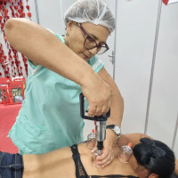
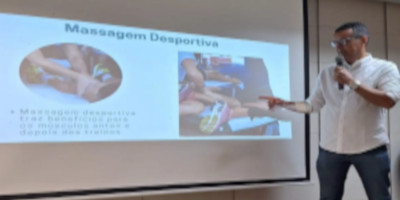

Massoterapeuta | Estudante de Biomedicina na Estácio
Voltar para o siteOlá! Meu nome é Geneilton Guedes. Sou massoterapeuta dedicado ao bem-estar e saúde física dos meus clientes. Com uma abordagem terapêutica e foco em aliviar tensões, ofereço serviços que ajudam a relaxar o corpo e a mente.
Atualmente estou cursando Biomedicina na Estácio, aprofundando meus conhecimentos em anatomia e saúde humana para oferecer um atendimento ainda mais qualificado.
Alívio do estresse e relaxamento muscular através de técnicas suaves e calmantes.
Massagem com foco em pontos de dor e tensão, ajudando a aliviar desconfortos musculares.
Tratamento que auxilia na eliminação de toxinas e melhora da circulação sanguínea.
Atualmente cursando Biomedicina na Estácio, onde estou expandindo meus conhecimentos sobre o corpo humano e suas funções. Minha formação em Massoterapia e o curso de Biomedicina me permitem oferecer um atendimento diferenciado e com embasamento científico.
Entre em contato conosco através das nossas redes sociais: